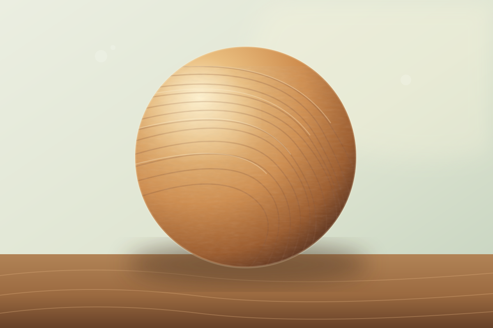

Du bist dabei
Auf Wunsch bekommst du Projekt-Updates: von der Planung bis zu den ersten rollenden Kugeln.
Die erste Chügelibahn am Walcheweiher ist eine private Initiative – kein Projekt der Stadt Winterthur. Mit deiner Spende helfen wir, die ersten Kugelrinnen in vorhandene Baumstämme einzuarbeiten. Unser Ziel: CHF 5’000.
Wähle einen Betrag. Du siehst gleich, welches Dankeschön wir dafür planen. Die sichere Bezahlung mit TWINT wird vor dem Start eingerichtet.
Der Button löst ausdrücklich keine Zahlung aus. Er erhöht nur den lokalen Demo-Zähler für diese Vorschau.
Die Testspende wurde nur in deinem Browser simuliert. Es ist kein Geld geflossen.
Sobald die Spendensammlung live ist, zeigen wir hier die bestätigten Einnahmen. Die Demo erfasst keine echten Spenden.
Mit CHF 5’000 möchten wir mit dem Forstdienst die ersten Kugelrinnen in vorhandene Baumstämme am Walcheweiher einarbeiten. So kann die erste Chügelibahn Gestalt annehmen. Falls mehr Spenden zusammenkommen, können weitere geeignete Spielelemente geprüft werden.
Wir dokumentieren die Arbeiten und legen anschliessend offen, wie die Spendengelder eingesetzt wurden.
Die Chügelibahn ist privat initiiert. Der Forstdienst der Stadt Winterthur unterstützt die Umsetzung vor Ort; daraus wird kein städtisches Fundraising-Projekt.

Auf Wunsch bekommst du Projekt-Updates: von der Planung bis zu den ersten rollenden Kugeln.
Wir laden dich zum geplanten Eröffnungsapéro ein, sobald Termin und Durchführung feststehen.
Zusätzlich zur Einladung schicken wir dir eine Holzkugel nach Hause. Geplant ist eine erste Serie von 50 Stück.

Ab CHF 100 möchten wir uns zusätzlich mit einer eigens für das Projekt gestalteten Holzkugel bedanken. Wie sie genau aussehen wird, entscheiden wir noch.
Visualisierung: So könnte eine schöne Holzkugel für Winti aussehen. Die genaue Ausführung wird noch festgelegt.
Nein. Die erste Chügelibahn am Walcheweiher ist eine private Initiative. Der Standort wurde mit dem Forstdienst der Stadt Winterthur vorbesprochen und die handwerkliche Umsetzung ist mit ihm abgestimmt.
Vor allem für die ersten Kugelrinnen in vorhandenen Baumstämmen sowie erforderliches Material und weitere Projektkosten. Das geplante Budget kannst du auf der Transparenzseite nachlesen.
Zuerst prüfen wir eine kleinere, sinnvolle Umsetzung. Ist auch das nicht möglich, sollen die zweckgebundenen Spenden zurückerstattet werden.
Wir dokumentieren Einnahmen und Ausgaben. Steven Büchi von der PRT Revisions & Treuhand AG hat zugesagt, die Projektabrechnung nach Abschluss kostenlos und unabhängig zu prüfen. Der Abschlussbericht geht per E-Mail an Spender:innen, deren Adresse uns vorliegt.
Noch nicht. Aktuell ist das Spendenformular eine Demo und löst keine Zahlung aus. Eine sichere Zahlungslösung mit TWINT ist für den Start geplant.
Eine steuerliche Abzugsfähigkeit können wir derzeit nicht zusichern.
Je mehr Menschen von der Idee erfahren, desto besser. Teile die Seite mit Freund:innen, Familien, Quartiervereinen und Menschen, die sich für Winterthur engagieren.